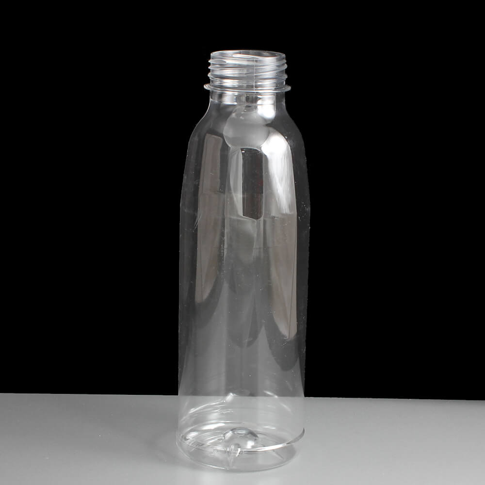
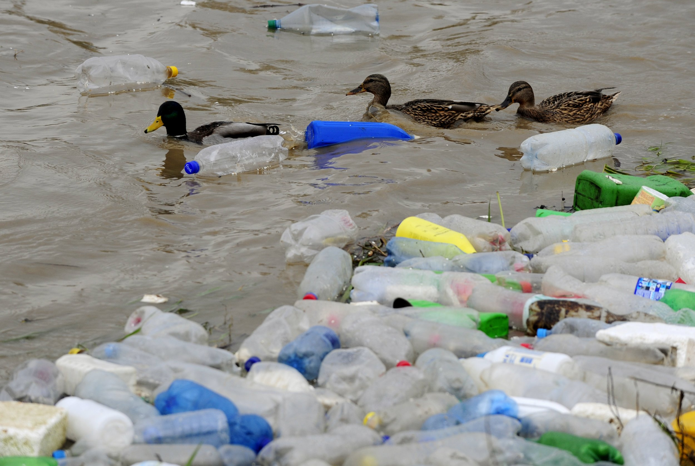
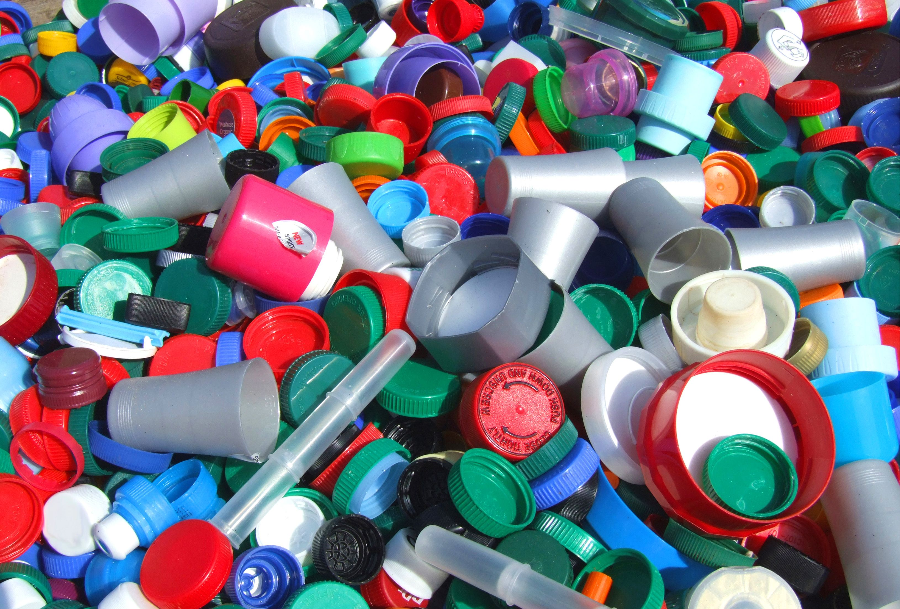

First Plastic Created
The first plastic based on a synthetic polymer was made from phenol and formaldehyde, with the first viable and cheap synthesis methods invented in 1907, by Leo Hendrik Baekeland, a Belgian-born American living in New York state.
The Start of Plastic Pollution
This is our main data entry on plastics, with a particular focus on its pollution of the environment. The first synthetic plastic — Bakelite — was produced in 1907, and is said to mark the beginning of the global plastics industry. However, rapid growth in global plastic production was not realised until the 1950s.
Chlorinated Plastics
Chlorinated plastic can release harmful chemicals into the surrounding soil, which can then seep into groundwater or other surrounding water sources, and also the ecosystem. This can cause a range of potentially harmful effects on the species that drink the water.

Threats from Marine Debris
The Problem: Over 1 million marine animals (including mammals, fish, sharks, turtles, and birds) are killed each year due to plastic debris in the ocean. Currently, it is estimated that there are 100 million tons of plastic in oceans around the world.